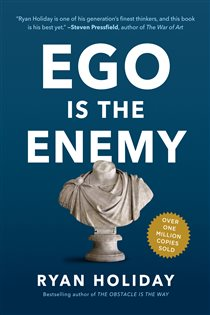

Why Did Howard Hughes Fail?
The Billionaire in a Darkened Room
📜 What Happened
The world's richest man — aviator, filmmaker, industrialist — spent his final decade in blacked-out hotel penthouses: unwashed, storing his own waste in jars, watching the same films on loop, surrounded only by paid aides instructed never to speak first. His empire was looted by handlers while he issued memos about tissue-box protocols. He died on a plane weighing 90 pounds; the FBI needed fingerprints to identify him.
☠️ The Fatal Mistake
He fired or exiled every person who could tell him no — decades before the isolation became visible, the information diet was already fatal.
🧠 The Lesson (Free for You)
Power without truth-tellers is a slow-motion suicide. The entourage that never contradicts you isn't loyalty — it's the walls of the room closing in.
📕 The Antidote Book

Ego — the unhealthy belief in your own importance — is not confidence; it's confidence's counterfeit, and it attacks at all three phases of any pursuit. ASPIRING: ego makes you talk instead of work, refuse the…
📖 OPEN THE FULL INTERACTIVE BREAKDOWN →Searchable, filterable, free forever — they paid billions; your lesson is free.